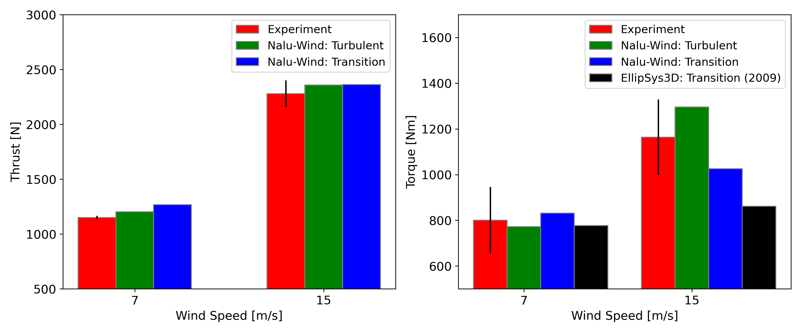

NREL Phase VI Rotor
ExaWind simulations are performed for NREL’s Unsteady Aerodynamics Experiment Phase VI rotor [1]. The experimental conditions of the rotor are summarized below:
Tested in the 80 X 120 ft wind tunnel at NASA Ames Research Center
Two bladed rotor with a diameter of 10.529 m
Fixed tip speed, 72 RPM
Blade section: single airfoil, S809, from r/R=0.25
Nonlinear twist with blade tip pitch of 3deg
Pitch and twist axis at 0.3c
Simulation Setup
ExaWind driver version: a38a4d5f96e4d3b42b52f41280e2d8d28c57ef25
Nalu-Wind version: f3cecafbdc05e61d0550ff41a30307425ef8197b
Turbulence / Transition model: SST-2003 with the 1-eq Gamma transition model
Four Picard iterations
AMR-Wind version: 8bad127f62cf2fd2f0d0ae16f2df47fdd0d069f8
Freestream conditions
Simulations are performed for both fully turbulent and laminar-turbulent transition conditions at two wind speeds: 7 m/s and 15 m/s, which represent speeds below and above the rated wind speed, respectively.
The tunnel’s turbulence intensity was reported to be below 0.5%, but the precise measurement was unavailable during the experiments. In this work, a turbulence intensity of 0.1% was assumed, which is typical for wind tunnels. The freestream conditions for the k and \(\omega\) account for the decay of turbulent variables from the inlet to the rotor, with the inlet set 100m upstream of the rotor. The conditions are as follows:
Inflow conditions at 7 m/s
\(U_\infty\)=7.0 m/s, \(\rho\)=1.246 kg/m3, \(\mu_t/\mu\)=4.5
\(k_\infty\)= 0.007350, \(\omega_\infty\)= 115.044281
Inflow conditions at 15 m/s
\(U_\infty\)=15.0 m/s, \(\rho\)=1.246 kg/m3, \(\mu_t/\mu\)=9.7
\(k_\infty\)=0.033750, \(\omega_\infty\)=245.071186
CFD mesh generation
The near-body (Nalu-Wind) mesh was created using Pointwise from the CAD model. The two blades are connected with a cylinder at the center, while other components such as the spinner or tower were not included in the CFD mesh.
Mesh topology: O-O typed structured mesh
500 points in the chordwise direction
Initial wall normal spacing: 5e-6m
Size of the overset boundaries: 1.5m from the blade surface
Wall-normal growth rate: 1.15
Total cell counts: 23,192,978
Off-body (AMR-Wind) mesh was generated using the built-in capability of AMR-Wind. Off-body mesh information is summarized below
Mesh topology: Cartesian with AMR
Domain in x= -100 to 150m, y=-100m to 100m, z=-100m to 100m
Initial grid size: 0.78125m
Finest cell size: 0.1953 m with 4 AMR levels
See detail ranges of the mesh refinement in static_box.txt
Total cell counts: 45,527,040
Results
The rotor simulations are performed in four sequential stages with reduced time step sizes, so that rotor revolution per iteration decreased as follows:
Rev. 1 and 2: 0.25° per iteration
Rev. 3 and 4: 0.125° per iteration
Rev. 5 and 6: 0.0625° per iteration
Rev. 7 and 8: 0.03125° per iteration
This approach was particularly important for the wind speed of 15 m/s to acheive the time-step size conevergence, which exhibits highly separated flow, with the sectional angle of attack distribution ranging between 15° and 35°.
The figure below compares the rotor performance (thrust and torque) against experimental data and available other numerical results [2]. The experimental error is indicated by the black uncertainty bar at the top of each Experiment column. For the Nalu-Wind results, the rotor performance was averaged over the last one revolution.

For the thrust, the transition simulations predict slightly higher values than the fully turbulent simulations, although the differences are minor. For the torque, both fully turbulent and transition simulation results fall within the standard deviation of the experimental measurements. At 7 m/s, the transition simulation predicts slightly higher torque than the fully turbulent simulations due to lower drag from more laminar flow. On the other hand, at 15 m/s, the fully turbulent simulations predict higher torque. This could be attributed to higher turbulent eddy viscosity in the fully turbulent simulation, resulting in more attached flow on the blade section. Overall, both fully turbulent and transition simulations provide reasonable predictions.
The simulations were performed using 1,440 cores on NREL’s Kestrel HPC cluster: 1152 cores for Nalu-Wind, and 288 cores for AMR-Wind. The transition simulations took approximately 55 hours for the total 8 revolutions.
References
[1]: M. H. Hand et al, “Unsteady Aerodynamics Experiment Phase VI: Wind Tunnel Test Configurations and Available Data Campaigns,” NREL/TP-500-29955, 2001.
[2]: Sørensen, “CFD Modelling of Laminar-turbulent Transition for Airfoils and Rotors Using the Gamma-Re Model,” Wind Energ. 12:715–733, 2009.